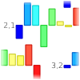
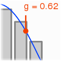
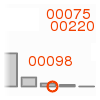

Input files
The system accepts exactly two files: one that contains processing
instructions (configuration file) and another that contains the tabulated
data with column headings (data file). The instructions can be of three
main types: NameVariable defines the column (heading) in the
data file that lists the sample labels, which need not be numbers.
InputVariable defines a column of training data for the SOM.
Note that you should list multiple input variables in the configuration file.
TestVariable indicates data that is not to be used in the
training of the model, but can be used for statistical significance estimates.
ResponseVariable can be used to guide the SOM in a
semi-supervised manner (automatic scaling of inputs). An artificial dataset
is available for testing on the submission page.
You can set the map size also manually with the MapSize
instruction. See the example configuration file for details.
The default input file format is tabulator separated text. If you are using
spreadsheet software to prepare your files (e.g. MS Excel), please make sure
that you save/export the data into a text file before submitting. For security
reasons, non-alphanumeric characters may be converted to numeric codes during
processing; it is thus best to use only the basic English alphabet to avoid
confusion.
Output file formats
ASC, ERR, LOG, ST (plain text)
Typically used for internal program logic and processing logs. Used also
for storing numeric results in some instances.
PNG (Portable Network Graphics)
A bitmapped image format with lossless data compression. Use this format
for web publishing or other electronic media. For high-quality printed or
digital documents, the vector graphics formats SVG, PS or PDF are preferred.
SVG (Scalable Vector Graphics)
An XML specification and file format for expressing 2D vector graphics.
Many web browsers can display SVG; for image processing you can use the Inkscape software. SVG files are always
converted to PNG by the job management system in normal conditions.
TXT (Tabulator delimited text with column headings)
Primary format for storing numeric results. Compatible with MS Excel. If
you are using an older version of OpenOffice, convert filename extension
to '.csv' before opening.
Prototypes

From a practical point of view, the self-organizing map is nothing more
than a collection of multi-variate profiles of the input variables. The output
file proto.svg contains a
visualization of these profiles. The bar plots describe the relative level of
each input on a given map unit and the numbers next to the bars indicate the
coordinate on the map. For large SOMs, only a limited set of all profiles is
depicted to prevent excessive image files; the systems adds a notification
"reduced prototype visualization" if this is the case. The file
protolegend.svg links the variables to the bar colors, so that
the figure can be correctly interpreted. If you are using response variables,
the input scales are listed in protoscales.txt.
Map colorings (component planes)
The collection of prototypes can also be viewed one variable at the time.
The map units can be colored according to the level of a given variable,
which need not be an input. This is analogous to a geographic map that is
painted according to the age of inhabitants in administrative districts, for
instance. Put differently, only the positions of the data samples
(e.g. patients) on the map is used, and the level of the variable under
interest is determined as an average of those samples that reside on any
given map unit.
The result files ending with
_plane.svg contain the map
colorings for every variable included in the analyses (inputs or outputs).
The same information is also available in numerical format (arranged into a
matrix) in the files ending with _plane.txt. Not all the maps
are colored with the same intesity of red or blue; this is due to the
statistical normalization procedure that is discussed next.
Statistical significance and confidence intervals

Comparing the colorings of variables with missing data, different types of
distributions and value ranges may make the overall intepretation of the
results challenging. Furthermore, there is no straightforward
statistical test to verify the significance of the observed prototypes and
spatial patterns.
Here the above problems have been solved by numerical approximations: the
P-values of non-input variables are estimated by permutation analysis, and the
model variance (basis of confidence intervals) is estimated by a bootstrapping
algorithm. This requires some computational resources, but for modern hardware
the processing time is minutes rather than hours, which is very efficient
considering the efforts in data collection in medical sciences, for example.
Files ending with
_null.svg contain the empirical
null distribution for the hypothesis that the variable under interest is not
in any way related to the layout of the data samples on the map. The histogram
describes the values of the test statistic (a measure of regional variation)
from the permutation rounds. The null distribution has an approximately
Gaussian shape, and the P-value is computed according to the standard normal
density function. Note that P-values cannot be computed for the input variables
since they are directly responsible for the layout. The same procedure is
nevertheless repeated for every variable to make the color scales comparable.
A summary of the results is tabulated in pvalues.txt.
Confidence intervals (95%) for each coloring are stored in files ending with
_c0025.txt (2.5 percentile) and _c0975.txt
(97.5 percentile). The percentiles are obtained by bootstrapping: random
sample sets (with replacement) are drawn repeatedly and the coloring is
recomputed at each iteration. For input variables this may give optimistic
results, since a full simulation of model variance would involve recomputing
the SOM at each iteration. Note also that due to the lack of constraits
for the SOM shapes the full approach would not be accurate either in general.
Map structure and quality
Besides statistical considerations, the map quality is also determined
by its capacity to describe the salient aspects of the dataset. A key property
of any unsupervised learning method is to detect the presence of clusters.
For the SOM, distinct groups (if present) will be reflected by differences in
adjacent prototypes when moving across the map. This so called U-matrix
is often depicted as distances between map units, but in many cases this makes
it difficult to relate the U-matrix to the map colorings. Here the focus is on
the rate of change rather than unit distances; hence the "U-book"
transforms into just another coloring of the map in the result files
ubook.svg and
ubook.txt.
The SOM training algorithm is iterative and as such subject to incomplete
model fitting. Two complementary error measures can be utilized to investigate
the map structure. First, the average vector difference between samples and
their best matching map units indicates how well the model can explain the
variations in the data (quantization error). Another approach is to look at
the best and second best matching units: if they are adjacent, the samples
localize to a small area on the map, which is a sign of descriptive
efficiency (low topographic error). During the training process, both
measures usually decline until the topographic error begins to grow if
the map smoothing function is inadequate.
One or two numbers is insufficient to illustrate the map structure so
the two measures are estimated locally on each map unit. This way areas of
poor fit and the samples therein can be identified and their impact
considered when interperting the results. The quantization error coloring is
stored in qbook.svg and qbook.txt, and the topographic coloring
in tbook.svg and tbook.txt.
Sample positions, outliers and missing data

A few unusual samples can have a significant impact on the shape of the SOM
and it is therefore important to carefully investigate those parts of the
map where errors are high. On the other hand, one can also look at the
data and determine those samples that do not fit the model. The histogram
of the sample quantization errors is depicted in qerrors.svg
and the error magnitudes are listed in qerrors.txt. Data items
with unusually large errors may be erroneous and need to be removed or at
least checked in detail.
Sometimes it may be interesting to study the map locations of inidividual
samples, especially if they represent time series data and the trajectories on
the map contain important dynamic features. The sample positions are thus
stored in bmus.txt for subsequent analyses.
The SOM produces estimates for missing values in the training set,
so it can be used for data imputation. Similarly, the test and response
variables can be estimated from the map structure. The imputed training
set (with missing values replaced by estimates) is stored in
imputed_inputs.txt and the estimated output data are stored in
estimated_testvars.txt and estimated_responses.txt.
|